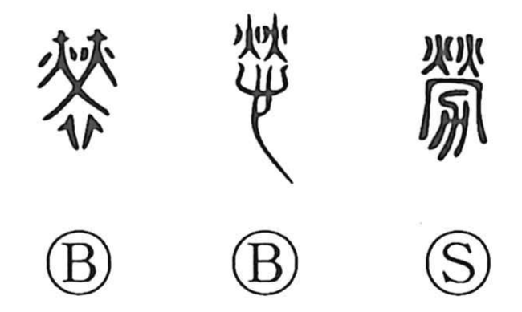

Explanation
労, formerly 勞, combines a sacred courtyard fire with 力, the plough. The plough was purified in the fire before agricultural work began. Similar rites at the beginning and end of the season were believed to keep harmful insects from the crops.
The rite sought the gods’ kindly response: help, reward, and care for those undertaking the work. This divine encouragement is the earlier meaning of 勞. Related rites purified agricultural tools with pigment, as in 静, or garments with sacred fire.
From the work protected by the rite, 労 broadens to labour, service, and achievement. The exertion also brings fatigue and hardship. Its uses for comforting, thanking, or acknowledging someone’s effort preserve the earlier benevolent response alongside the toil.